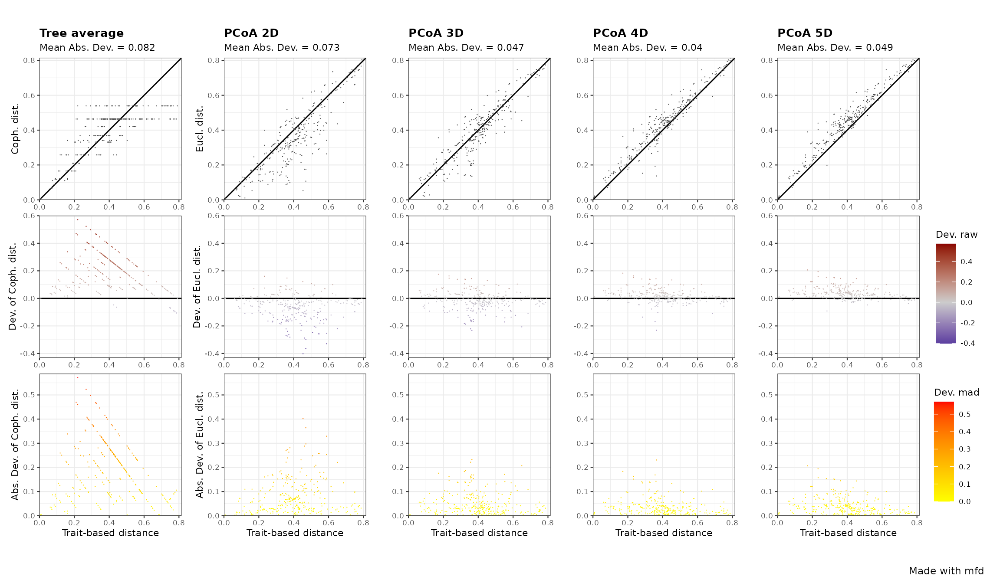

Compute and Interpret Quality of Functional Spaces
Sebastien Villeger
2023-10-16
Source:vignettes/Compute_and_interpret_quality_of_functional_spaces.Rmd
Compute_and_interpret_quality_of_functional_spaces.RmdAbout this tutorial
This tutorial illustrates how to compute and interpret quality of
functional spaces using mFD, with a special emphasis on how
functional dendrograms and functional spaces with a low dimension could
distort original trait-based distances. This tutorial also explains why
square-rooting the original distances before computing PCoA may be
misleading.
1. Tutorial’s data
DATA The dataset used to illustrate this tutorial is a fruit dataset based on 25 types of fruits. Each fruit is characterized by 5 traits summarized in the following table:
| Trait name | Trait measurement | Trait type | Number of classes | Classes code | Unit |
|---|---|---|---|---|---|
| Size | Maximal diameter | Ordinal | 5 | 0-1 ; 1-3 ; 3-5 ; 5-10 ; 10-20 | cm |
| Plant | Growth form | Categorical | 4 | tree; schrub; vine; forb | NA |
| Climate | Climatic niche | Ordinal | 3 | temperate ; subtropical ; tropical | NA |
| Seed | Seed type | Ordinal | 3 | none ; pip ; pit | NA |
| Sugar | Sugar | Continuous | NA | NA | g/kg |
NOTE This dataset is a subset of the dataset used in the mFD: General Workflow tutorial to keep only non-fuzzy traits.
The dataframe gathering species traits, looks as follows:
data("fruits_traits", package = "mFD")
# remove non-fuzzy traits:
fruits_traits <- fruits_traits[1:5]
# plot the table:
knitr::kable(head(fruits_traits),
caption = "Species x traits dataframe based on *fruits* dataset")| Size | Plant | Climate | Seed | Sugar | |
|---|---|---|---|---|---|
| apple | 5-10cm | tree | temperate | pip | 103.9 |
| apricot | 3-5cm | tree | temperate | pit | 92.4 |
| banana | 10-20cm | tree | tropical | none | 122.3 |
| currant | 0-1cm | shrub | temperate | pip | 73.7 |
| blackberry | 1-3cm | shrub | temperate | pip | 48.8 |
| blueberry | 0-1cm | forb | temperate | pip | 100.0 |
Thus, this dataset contains 5 traits: 3 ordinal (Size, Climate, Seed), 1 categorical (Plant type), 1 continuous (sugar content):
## Size Plant Climate Seed Sugar
## 0-1cm :2 forb : 5 temperate :15 none: 2 Min. : 16.90
## 1-3cm :6 shrub: 3 subtropical: 4 pip :17 1st Qu.: 73.70
## 3-5cm :5 tree :14 tropical : 6 pit : 6 Median : 92.40
## 5-10cm :6 vine : 3 Mean : 90.66
## 10-20cm:6 3rd Qu.:105.80
## Max. :162.50These traits are summed up in the following dataframe (details: mFD: General Workflow tutorial):
fruits_traits_cat <- data.frame(names(fruits_traits), c("O","N","O","O","Q"))
colnames(fruits_traits_cat) <- c("trait_name", "trait_type")
fruits_traits_cat## trait_name trait_type
## 1 Size O
## 2 Plant N
## 3 Climate O
## 4 Seed O
## 5 Sugar Q2. Compute trait-based distance between species
First, trait-based distance between species should be computed using
mFD::funct.dist(). Here we use Gower distance.
USAGE
# compute trait-based distances:
dist_fruits <- mFD::funct.dist(
sp_tr = fruits_traits,
tr_cat = fruits_traits_cat,
metric = "gower",
scale_euclid = "noscale",
ordinal_var = "classic",
weight_type = "equal",
stop_if_NA = TRUE)
# sum up the distance matrix:
summary(as.matrix(dist_fruits))## apple apricot banana currant
## Min. :0.0000 Min. :0.0000 Min. :0.0000 Min. :0.0000
## 1st Qu.:0.1658 1st Qu.:0.2184 1st Qu.:0.3448 1st Qu.:0.3723
## Median :0.2848 Median :0.3607 Median :0.5027 Median :0.4257
## Mean :0.2813 Mean :0.3285 Mean :0.4774 Mean :0.4317
## 3rd Qu.:0.3805 3rd Qu.:0.4165 3rd Qu.:0.5945 3rd Qu.:0.5169
## Max. :0.5574 Max. :0.7084 Max. :0.7668 Max. :0.7864
## blackberry blueberry cherry grape
## Min. :0.0000 Min. :0.0000 Min. :0.0000 Min. :0.0000
## 1st Qu.:0.3565 1st Qu.:0.3269 1st Qu.:0.2422 1st Qu.:0.3562
## Median :0.4099 Median :0.4011 Median :0.4089 Median :0.4370
## Mean :0.4102 Mean :0.4094 Mean :0.3689 Mean :0.4447
## 3rd Qu.:0.4834 3rd Qu.:0.5165 3rd Qu.:0.4526 3rd Qu.:0.5140
## Max. :0.7706 Max. :0.7503 Max. :0.7908 Max. :0.7379
## grapefruit kiwifruit lemon lime
## Min. :0.0000 Min. :0.0000 Min. :0.0000 Min. :0.0000
## 1st Qu.:0.2648 1st Qu.:0.2804 1st Qu.:0.2084 1st Qu.:0.3360
## Median :0.3265 Median :0.3628 Median :0.4033 Median :0.4130
## Mean :0.3321 Mean :0.3668 Mean :0.3531 Mean :0.4133
## 3rd Qu.:0.4588 3rd Qu.:0.3891 3rd Qu.:0.4418 3rd Qu.:0.5121
## Max. :0.5728 Max. :0.6857 Max. :0.5889 Max. :0.6500
## litchi mango melon orange
## Min. :0.0000 Min. :0.0000 Min. :0.0000 Min. :0.0000
## 1st Qu.:0.3360 1st Qu.:0.3423 1st Qu.:0.2848 1st Qu.:0.2103
## Median :0.4665 Median :0.4033 Median :0.3975 Median :0.3121
## Mean :0.4678 Mean :0.4597 Mean :0.3807 Mean :0.2985
## 3rd Qu.:0.6420 3rd Qu.:0.6141 3rd Qu.:0.4652 3rd Qu.:0.4584
## Max. :0.7512 Max. :0.7864 Max. :0.7512 Max. :0.4977
## passion_fruit peach pear pineapple
## Min. :0.0000 Min. :0.0000 Min. :0.0000 Min. :0.0000
## 1st Qu.:0.4054 1st Qu.:0.2103 1st Qu.:0.1614 1st Qu.:0.4523
## Median :0.4695 Median :0.3537 Median :0.2760 Median :0.5510
## Mean :0.4449 Mean :0.3324 Mean :0.2787 Mean :0.5329
## 3rd Qu.:0.5368 3rd Qu.:0.4548 3rd Qu.:0.3827 3rd Qu.:0.7010
## Max. :0.5886 Max. :0.6701 Max. :0.5514 Max. :0.7908
## plum raspberry strawberry tangerine
## Min. :0.0000 Min. :0.0000 Min. :0.0000 Min. :0.0000
## 1st Qu.:0.2091 1st Qu.:0.3630 1st Qu.:0.2841 1st Qu.:0.2091
## Median :0.3628 Median :0.4165 Median :0.4098 Median :0.3139
## Mean :0.3291 Mean :0.4152 Mean :0.3941 Mean :0.3005
## 3rd Qu.:0.4258 3rd Qu.:0.4872 3rd Qu.:0.4832 3rd Qu.:0.4282
## Max. :0.7010 Max. :0.7772 Max. :0.7705 Max. :0.5100
## water_melon
## Min. :0.0000
## 1st Qu.:0.2812
## Median :0.4011
## Mean :0.3794
## 3rd Qu.:0.4617
## Max. :0.7477The Gower distances range from < 0.01 to 0.790. For instance, Gower distances between blackberry and 3 other fruits are:
# retrieve fruits names:
ex_blackberry <- c("blackberry","currant","cherry","banana")
# get the distance matrix only for these species:
round(as.matrix(dist_fruits)[ex_blackberry, ex_blackberry], 2)## blackberry currant cherry banana
## blackberry 0.00 0.08 0.41 0.75
## currant 0.08 0.00 0.42 0.77
## cherry 0.41 0.42 0.00 0.56
## banana 0.75 0.77 0.56 0.00Those observed differences in values are intuitively related to trait values of these 4 species:
fruits_traits[ex_blackberry, ]## Size Plant Climate Seed Sugar
## blackberry 1-3cm shrub temperate pip 48.8
## currant 0-1cm shrub temperate pip 73.7
## cherry 1-3cm tree temperate pit 128.2
## banana 10-20cm tree tropical none 122.3Indeed:
blackberry shares 3 traits values with currant and these 2 species have close values for other 2 traits which explains the low distance (< 0.1)
blackberry shares 2 traits with cherry (size and climate), differs slightly for seed size (by only 1 order) but is quite different in terms of plant type and sugar content, hence Gower distance is around 0.5
blackberry is maximally different to banana for ordinal traits, difference for categorical and sugar content differ by a 2.5 factor, hence Gower distance is high (> 0.8).
3. Compute functional space, quality metrics and plot them
3.1. Compute functional spaces and associated quality metrics
We now compute varying number of functional space from 1 to 9
dimensions based on a PCoA as well as an UPGMA dendrogram using
mFD::quality.fspaces() function. We also compute 4 quality
metrics (= all combinations of deviation weighting and distance
scaling) (details: mFD
General Workflow tutorial, step 4.1).
USAGE
# use quality.fpscaes function to compute quality metrics:
quality_fspaces_fruits <- mFD::quality.fspaces(
sp_dist = dist_fruits,
fdendro = "average",
maxdim_pcoa = 9,
deviation_weighting = c("absolute", "squared"),
fdist_scaling = c(TRUE, FALSE))## Registered S3 method overwritten by 'dendextend':
## method from
## rev.hclust vegan
# display the table gathering quality metrics:
quality_fspaces_fruits$"quality_fspaces"## mad rmsd mad_scaled rmsd_scaled
## pcoa_1d 0.14960800 0.19275417 0.14395689 0.18875975
## pcoa_2d 0.07260544 0.10110390 0.07492961 0.10306073
## pcoa_3d 0.04696520 0.06505328 0.04730734 0.06524948
## pcoa_4d 0.04000008 0.05415334 0.03430576 0.04874494
## pcoa_5d 0.04946642 0.06180911 0.03885764 0.05214018
## pcoa_6d 0.05537470 0.06660442 0.04286165 0.05561341
## pcoa_7d 0.05951430 0.06979397 0.04572100 0.05826640
## pcoa_8d 0.06353017 0.07314032 0.04796894 0.06039689
## pcoa_9d 0.06464350 0.07410817 0.04882052 0.06119030
## tree_average 0.08204566 0.10937029 0.19229494 0.22468355
# retrieve the functional space associated with minimal quality metric:
apply(quality_fspaces_fruits$quality_fspaces, 2, which.min)## mad rmsd mad_scaled rmsd_scaled
## 4 4 4 4The best space (with the minimum deviation between trait-based distance and space-based distance) is the 4D according to all indices.
Then using the output of mFD::quality.fspaces(), we plot
quality metrics of each space:
library("magrittr")
quality_fspaces_fruits$"quality_fspaces" %>%
tibble::as_tibble(rownames = "Funct.space") %>%
tidyr::pivot_longer(cols =! Funct.space, names_to = "quality_metric", values_to = "Quality") %>%
ggplot2::ggplot(ggplot2::aes(x = Funct.space, y = Quality,
color = quality_metric, shape = quality_metric)) +
ggplot2::geom_point() NB The higher the value of metric, the higher the deviations between trait-based and space-based distance between species, hence the lower the quality of the functional space is.
We can here notice that:
inaccuracy of dendrogram (shown on the right) is much higher than inaccuracy of spaces made of at least 3 dimensions
ranking of spaces is only slightly affected by quality metric, with here higher values for indices based on squared deviation
scaling distance increases inaccuracy of dendrogram
As FD indices will eventually be computed on coordinates on space (hence raw distance), we hereafter will consider only the mean absolute-deviation metric.
The raw and absolute deviation of distances for only dendrogram and
2, 3, 4D spaces are plotted below thanks to the
mFD::quality.fspaces.plot() function:
USAGE
mFD::quality.fspaces.plot(
fspaces_quality = quality_fspaces_fruits,
quality_metric = "mad",
fspaces_plot = c("tree_average", "pcoa_2d", "pcoa_3d", "pcoa_4d", 'pcoa_5d'))
2D and 3D spaces bias distance (hence have high deviation, see top row) because some species pairs are closer in those spaces than they have close trait values. In the 4D space most species pairs are accurately represented (absolute deviation < 0.1).
3.2. Focus on dendrograms
NB Many of the pairwise distance on dendrogram deviate by more than 0.3 from the trait-based distances (top-left panel of the above figure), particularly with some of the highest distances on the dendrogram corresponding to pairs of species with actually close trait values (Gower distance < 0.3). The dichotomous nature of dendrogram implies that many species pairs have the same distance, with especially all species pairs being on different sides of the tree root having all the maximal distance.
For instance, let’s consider the 3 fruits: lemon, lime and cherry:
# get fruits traits:
fruits_traits[c("cherry", "lime", "lemon"), ]## Size Plant Climate Seed Sugar
## cherry 1-3cm tree temperate pit 128.2
## lime 3-5cm tree tropical pip 16.9
## lemon 5-10cm tree subtropical pip 25.0The 2 Citrus fruits have similar trait values and differ from the cherry. Now let’s have a look at their pairwise distances: Gower distance on trait values, Euclidean distance in the 4 dimensions PCoA space and cophenetic distance on the UPGMA dendrogram.
quality_fspaces_fruits$"details_fspaces"$"pairsp_fspaces_dist" %>%
dplyr::filter(sp.x %in% c("cherry", "lime", "lemon") &
sp.y %in% c("cherry", "lime", "lemon")) %>%
dplyr::select(sp.x, sp.y, tr, pcoa_4d, tree_average) %>%
dplyr::mutate(dplyr::across(where(is.numeric), round, 2))## sp.x sp.y tr pcoa_4d tree_average
## 1 lemon cherry 0.44 0.46 0.26
## 2 lime cherry 0.50 0.54 0.34
## 3 lime lemon 0.16 0.22 0.34As expected given trait values, Gower distance between lime and lemon is 2.75 (0.44/0.16 = 2.75) times lower than distance between each of them and cherry. Euclidean distances in the 4D space (pcoa_4d) are very similar to those Gower distance, with only a slight overestimation. Meanwhile, on the UPGMA dendrogram, lime is as distant to lemon than to the cherry and lemon is even closer to the cherry than to the lime. This is an illustration of the usual bias of dendrogram that overestimates distance between some pairs of species having actually similar trait values.
Now let’s have look to the distance between pineapple and other fruits:
quality_fspaces_fruits$"details_fspaces"$"pairsp_fspaces_dist" %>%
dplyr::filter(sp.x %in% c("pineapple") | sp.y %in% c("pineapple")) %>%
dplyr::mutate(fruit = stringr::str_replace_all(string = paste0(sp.x, "", sp.y),
pattern = "pineapple", replacement = "")) %>%
dplyr::select(fruit, Gower_distance = tr, Cophenetic_distance = tree_average) %>%
ggplot2::ggplot(ggplot2::aes(x = Gower_distance, y = Cophenetic_distance, label = fruit)) +
ggplot2::geom_point(size = 1) +
ggplot2::geom_text(size = 2, nudge_y = 0.08, check_overlap = TRUE) +
ggplot2::geom_abline(slope = 1, intercept = 0) +
ggplot2::scale_x_continuous(limits = c(0, 1)) +
ggplot2::scale_y_continuous(limits = c(0, 1))
The cophenetic distance on the dendrogram between pineapple and all species but banana is 0.53 while trait-based Gower distance with those 22 fruits varied by a two-fold magnitude from 0.32 (water melon) to 0.73 (currant). This homogenization of distance is due to the ultrametricity of the dendrogram, i.e. a species is at the same distance to all species not on the same main branch (i.e. descending from the root). Let’s plot of UPGMA dendrogram:
quality_fspaces_fruits$"details_fspaces"$"dendro" %>%
as.dendrogram() %>%
dendextend::plot_horiz.dendrogram(side = TRUE)We notice that pineapple is in the ‘outer’ group with other tropical fruits and that lime is as ‘close’ to cherry than to lemon.
3.3. Focus on the effect of square-rooting distance matrix before computing PcoA
A known ‘issue’ associated with the Gower metric applied to non-continuous traits is that distance matrix is not Euclidean. Let’s have a look:
# check if distance matrix checks Euclidean properties:
quality_fspaces_fruits$"details_trdist"$"trdist_euclidean"## [1] FALSEIt is FALSE with the fruit case: this is actually
intuitive because of the formula of Gower metric for categorical traits
that is binary (see example below)
Applying PCoA to a non-Euclidean distance eventually leads to PC axes
with negative eigenvalues. Those axes are meaningless and removed by
default by the ape::pcoa() function used in the
mFD::quality.fspaces() function.
# retrieve eigen values:
quality_fspaces_fruits$"details_fspaces"$"pc_eigenvalues"## Eigenvalues Relative_eig Rel_corr_eig Broken_stick Cum_corr_eig
## 1 1.183979604 0.523773886 0.20462637 0.16236050 0.2046264
## 2 0.679633661 0.300659202 0.12921016 0.11888224 0.3338365
## 3 0.387668534 0.171498439 0.08555182 0.09714311 0.4193883
## 4 0.286083089 0.126558642 0.07036147 0.08265036 0.4897498
## 5 0.199866442 0.088417759 0.05746926 0.07178079 0.5472191
## 6 0.067863730 0.030021843 0.03773054 0.06308514 0.5849496
## 7 0.040732146 0.018019258 0.03367348 0.05583876 0.6186231
## 8 0.037504259 0.016591292 0.03319080 0.04962758 0.6518139
## 9 0.008765524 0.003877729 0.02889342 0.04419280 0.6807073
## Cumul_br_stick
## 1 0.1623605
## 2 0.2812427
## 3 0.3783858
## 4 0.4610362
## 5 0.5328170
## 6 0.5959021
## 7 0.6517409
## 8 0.7013685
## 9 0.7455613Here, PCoA on the 25 fruits species described with 5 traits produced 9 PC axes with positive eigenvalues.
To deal with the non-Euclidean ‘issue’, it has been recommended to square-root the Gower distance matrix before computing the PCoA. However as Gower distance is by definition between 0 and 1, and as for 0 < x < 1, sqrt(x) > x: this transformation means that all square-root distances are higher than raw distances and the difference between raw and square-root distances varies non-linearly with raw distances.
If we look at raw and square-rooted Gower distance between blackberry and 3 other species:
quality_fspaces_fruits$"details_fspaces"$"pairsp_fspaces_dist" %>%
dplyr::select(sp.x, sp.y, Gower = tr) %>%
dplyr::mutate(sqrt_Gower = sqrt(Gower)) %>%
dplyr::filter(sp.x %in% ex_blackberry & sp.y %in% ex_blackberry) %>%
dplyr::mutate(dplyr::across(where(is.numeric), round, 2))## sp.x sp.y Gower sqrt_Gower
## 1 currant banana 0.77 0.88
## 2 blackberry banana 0.75 0.87
## 3 cherry banana 0.56 0.75
## 4 blackberry currant 0.08 0.29
## 5 cherry currant 0.42 0.65
## 6 cherry blackberry 0.41 0.64Raw Gower distance between blackberry and banana is almost twice higher than distance between blackberry and cherry and 10 times higher than distance between blackberry and currant. Square-root distance between blackberry and banana differs by a 1.5 and 3-fold factor to distance between blackberry and cherry and currant, respectively because of the high slope of the square-root function (close to 0).
If we apply mFD::quality.fspace() on the square-root of
Gower distance:
# compute quality metrics with square-root transformed distances:
quality_fspaces_fruits_sqrtgower <- mFD::quality.fspaces(
sp_dist = sqrt(dist_fruits),
fdendro = NULL,
maxdim_pcoa = 24,
deviation_weighting = "absolute",
fdist_scaling = FALSE)
# check if distance matrix checks Euclidean properties:
quality_fspaces_fruits_sqrtgower$"details_trdist"$"trdist_euclidean"## [1] TRUE
# input distance is now Euclidean
# get mean Absolute Deviation:
quality_fspaces_fruits_sqrtgower$"quality_fspaces"## mad
## pcoa_1d 3.382981e-01
## pcoa_2d 2.226087e-01
## pcoa_3d 1.564459e-01
## pcoa_4d 1.085341e-01
## pcoa_5d 7.532491e-02
## pcoa_6d 5.672018e-02
## pcoa_7d 4.145955e-02
## pcoa_8d 3.047546e-02
## pcoa_9d 2.150431e-02
## pcoa_10d 1.574287e-02
## pcoa_11d 1.110328e-02
## pcoa_12d 7.616664e-03
## pcoa_13d 5.610727e-03
## pcoa_14d 3.892704e-03
## pcoa_15d 2.938207e-03
## pcoa_16d 2.079826e-03
## pcoa_17d 1.567759e-03
## pcoa_18d 1.246871e-03
## pcoa_19d 8.976639e-04
## pcoa_20d 6.126478e-04
## pcoa_21d 3.900362e-04
## pcoa_22d 2.266322e-04
## pcoa_23d 7.579458e-05
## pcoa_24d 4.140438e-16The inaccuracy (measured with mAD (mean absolute deviation) metric) decreases with the number of axes down to 0.
But do not forget that the input used here is the square-root of Gower distance. So let’s compare deviation between trait-based Gower distance and Euclidean distance in the 24D PCoA space:
quality_fspaces_fruits$"details_fspaces"$"pairsp_fspaces_dist" %>%
dplyr::select(sp.x, sp.y, Gower_distance = tr) %>%
dplyr::mutate(Eucli_dist_24D_sqrt = quality_fspaces_fruits_sqrtgower$"details_fspaces"$"pairsp_fspaces_dist"$"pcoa_24d") %>%
ggplot2::ggplot(ggplot2::aes(x = Gower_distance, y = Eucli_dist_24D_sqrt)) +
ggplot2::geom_point(size = 1) +
ggplot2::geom_abline(slope = 1, intercept = 0) +
ggplot2::scale_x_continuous(limits = c(0, 1)) +
ggplot2::scale_y_continuous(limits = c(0, 1))As expected, the ranking of distances is ‘perfectly’ kept but with a square-root shape above the 1:1 line.
If we now compute the actual mAD between Gower and Euclidean distances in this apparently perfect 24D space:
## [1] 0.215148We notice that mAD = 0.212: inaccuracy is much higher than the worst space and of the dendrogram computed on the raw Gower distance matrix that does represent the actual difference in trait values
So to sum up:
- non-continuous traits ofteh make Gower distances between species being non-Euclidean
- PCoA on such Gower distance could lead to PCoA axes with negative eigenvalues but the remaining axes always represent accurately Gower distance (for more details see Maire et al. (2015) and especially Figure 2).
- Square-root transformed Gower distance is apparently increasing the efficiency of the PCoA (no more negative eigenvalue) but Euclidean distance in this space are square-root biased representation of trait-based distances that are the key features to account for when computing FD
NOTE:
If you are not convinced about Gower being both intuitive but non-Euclidean consider the following simple case of 8 species described with 3 categorical traits (2 modalities each), so there are 8 unique combinations of trait values and the 28 species pairs are sharing 0, 1, or 2 trait values:
# create a new dataset:
sp_tr <- data.frame(
tra = factor(c(LETTERS[1:2], LETTERS[1:2], LETTERS[1:2], LETTERS[1:2])),
trb = factor(c(rep("M", 4), rep("N", 4))) ,
trc = factor(c(rep("X", 2), rep("Y", 4), rep("X", 2)))
)
row.names(sp_tr) <- paste0("sp", 1:8)
sp_tr## tra trb trc
## sp1 A M X
## sp2 B M X
## sp3 A M Y
## sp4 B M Y
## sp5 A N Y
## sp6 B N Y
## sp7 A N X
## sp8 B N X
# compute Gower distance between all pairs of species:
dist_gower <- cluster::daisy(sp_tr, metric = "gower")
round(dist_gower, 2)## Dissimilarities :
## sp1 sp2 sp3 sp4 sp5 sp6 sp7
## sp2 0.33
## sp3 0.33 0.67
## sp4 0.67 0.33 0.33
## sp5 0.67 1.00 0.33 0.67
## sp6 1.00 0.67 0.67 0.33 0.33
## sp7 0.33 0.67 0.67 1.00 0.33 0.67
## sp8 0.67 0.33 1.00 0.67 0.67 0.33 0.33
##
## Metric : mixed ; Types = N, N, N
## Number of objects : 8There are thus only 3 distances values, 0.33, 0.67 or 1, depending on the number of traits with the same values (0, 1 or 2)
## Dissimilarities :
## sp1 sp2 sp3 sp4 sp5 sp6 sp7
## sp2 0.58
## sp3 0.58 0.82
## sp4 0.82 0.58 0.58
## sp5 0.82 1.00 0.58 0.82
## sp6 1.00 0.82 0.82 0.58 0.58
## sp7 0.58 0.82 0.82 1.00 0.58 0.82
## sp8 0.82 0.58 1.00 0.82 0.82 0.58 0.58
##
## Metric : mixed ; Types = N, N, N
## Number of objects : 8After applying the squareroot transformation, the (1/0.33) 3-fold difference in Gower distance between pairs of species sharing no trait value and pairs of species sharing 2 traits becomes (1/0.58) < 2. Thus, applying the square-root transformation to Gower distance decreases the magnitude of variation in trait-based distance, by increasing the distances between the most similar species